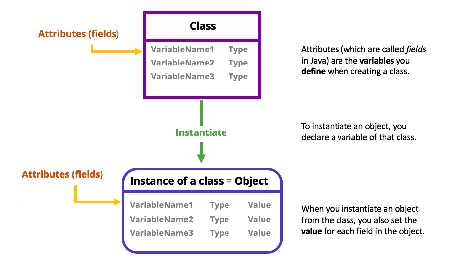

With HTML, XML, and other markup languages, a tag is an element inserted in documents or files that changes the look of content or performs an action. Below is an HTML element (container tag) with an open tag (start tag) showing the name and attribute, and a close tag (end tag) showing a forward slash and open tag name.

An element may refer to any of the following:
1. When referring to Hypertext Markup Language, see our HTML element definition for further information.
2. Elements is often used as an abbreviation of Adobe Photoshop Elements.
3. An element is a single part of a larger group. For example, in computer programming an array can contain different elements (index) that can be stored and called upon individually.

In mathematics, logic, and computer programming, a value is a definite object. For example, the number 1, the letter a, and the unique combination of letters that forms the word apple are all values. In a computers, a value is usually a number, a single character, or a string of characters.

In computing and computer programming, an attribute is a changeable property or characteristic of some component of a program that can be set to different values.
